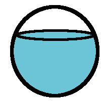
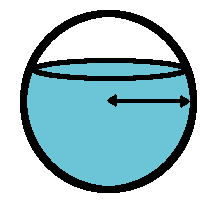
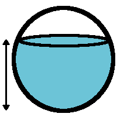

Water Level in a Spherical Tank Calculator



Volume of water (mL)
Tank
radius
(cm)
Water level (cm)
What's the height of the water level in a spherical tank?
The
Newton-Raphson method
iteratively solves this problem.
Volume of water in spherical tank : v = πh
2
r -
1
⁄
3
πh
3